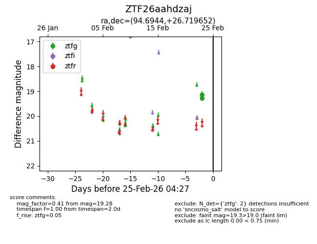
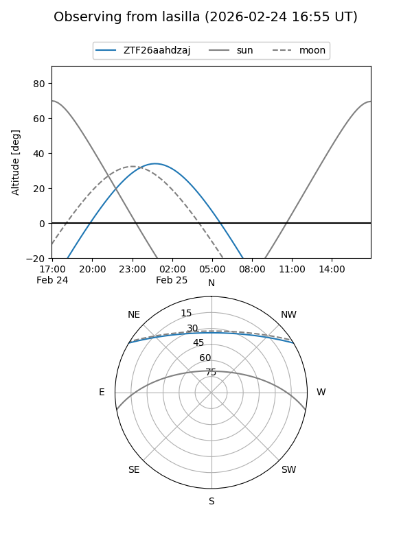
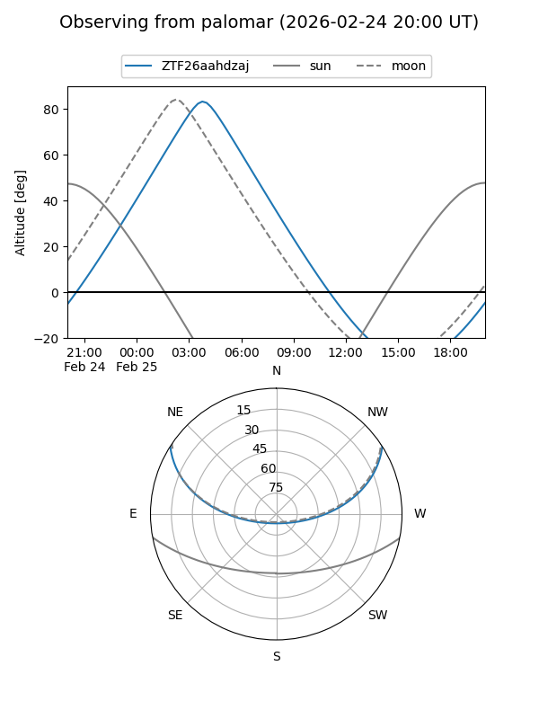

ZTF26aahdzaj
Target ZTF26aahdzaj at 2026-02-25 04:28
Aliases and brokers:
FINK: link
Lasair: link
ALeRCE: link
alt names
ZTF26aahdzaj (ztf,fink_ztf)
Coordinates:
equatorial (ra, dec) = 94.6944,+26.71965
equatorial (HMS+DMS) = 06:18:46.66,+26:43:10.75
galactic (l, b) = (185.5472,+5.28549)
Flags:
Photometry:
last ztfg=19.28
2 ztfg detections
Lightcurve

Visibility


Additional plots